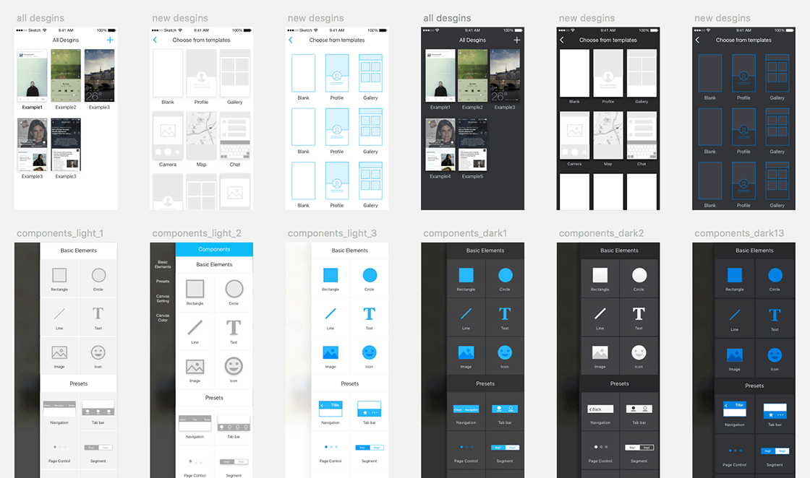
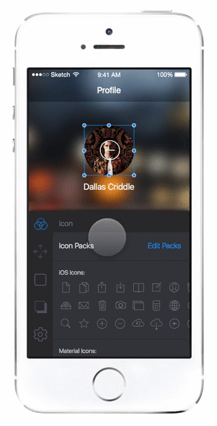
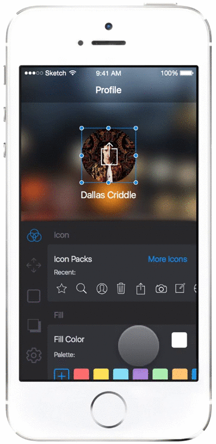
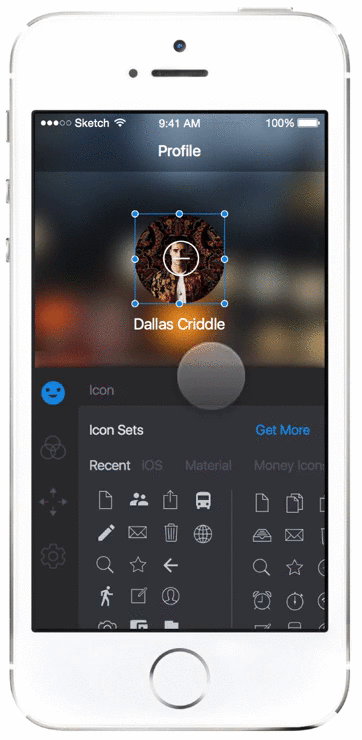

Design for the entire app, website and marketing banners, 2015
Inspr is an iOS app for you to design app mockups, fast and easy with features like components and templates. It’s just released couple weeks ago and hit #2 Product Hunt features on Nov. 19th. We’ve been making it for months and I thought it would be great to write down the process of designing Inspr.
When I joined Inspr team. Steven had completed an early product with all basic functions and features. The product needed some tweaks to make it from a workable product to a lovable product. However, we did not want to revamp the product. It would take so much time. We wanted to ship earlier to test the idea. So we summarized two most crucial directions before the first release:
We did a lot explorations and experiments on the visual design. But I’m not going to write about the details on this. I’ll focus more on the 2nd point.
iterations on visual design
Since having to make Inspr easy to use, we did many iterations on developing the editing of elements in Inspr. All the design on wireframes or mockups won’t tell us a highly interactive design works or not. The best way to test is to use prototypes on the mobile phones for users to actually use it. And I used Framer as the main tool because of the flexibility. Using Framer as the prototyping tool, I could make any customized interaction on the mobile phone. Whenever I came with a design solution, I prototyped it and handed it to the team to let everyone use it. Then I got feedbacks after the team playing with the prototypes. The feedbacks would be so real because it came from actually using it on the mobile phones. I’ll take one of the problem solving process as the example.
When we were designing the icon editing feature, there were some problems we had. We wanted to offer users different types of icon sets to choose from. But the editing panel is so long. Jamming all the icon sets into the panel will make the panel even longer.
The 1st iteration we had is to only show the icon sets chosen by the users. The chosen sets are listed vertically in the editing panel. We weren’t satisfied with this solution because by default there are two chosen icon sets, iOS icons and material design icons, and this makes the panel full of icons. We were afraid this could scare users away for there are too many icons and users will not know which icon to choose or even what to do. And if users enable numbers of icon sets, the panel will also be too long. To solve the too many icons problem, we came up with the 2nd iteration:
In the 2nd iteration, we only left the recent used icons in the editing panel. This took only a few space of the panel and make choosing frequent used icons easier. Whenever users want to choose from icon sets, just reveal the whole icon sets. This iteration solve the problem from the 1st iteration. However, there will be one more step to choose from icon sets and for new users, the blank empty recent used icon will be confusing. We found that there are different pros and cons in the 2 iterations. That led to the 3rd iteration from taking pros and removing the cons:
In the 3rd iteration, the behavior of selecting icons is very close to selecting emoji of iOS keyboard. Icon sets are horizontally placed in the first section of the editing panel. Users can choose from icon sets and switch to other controls easily. In the icon sets section, a few default icon sets are displayed. Users can add more icon sets and adjust the order from the Get More button. This just solved the problems we had in the icon selecting feature.
Above is one of the examples of how we design Inspr. Prototyping is important. If we did not make the prototypes and play with it, we won’t be able to know the problems from each iteration. And that could waste much time of the development. One of the important thing in the process is that the prototypes must be completed easily and as fast as possible. If you visit the links to prototypes I listed and check the code I wrote, you’ll notice that it’s really a big mess! But this doesn’t matter. The most important thing of prototypes is to test whether the idea works or not. Don’t be afraid to show the dirty code.
Making a new tool is fun and exciting. And we’re working on more cool features into Inspr. If you have any comments on Inspr or any thoughts on design and prototyping, feel free to reach out to me on Twitter.